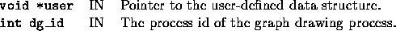

void user_init_draw_graph(void *user, int dg_id)
This function is invoked only if the do_draw_graph parameter is set. The user can initialize the graph drawing process by sending some initial information (e.g., the location of the nodes of a graph, like in the TSP.)
